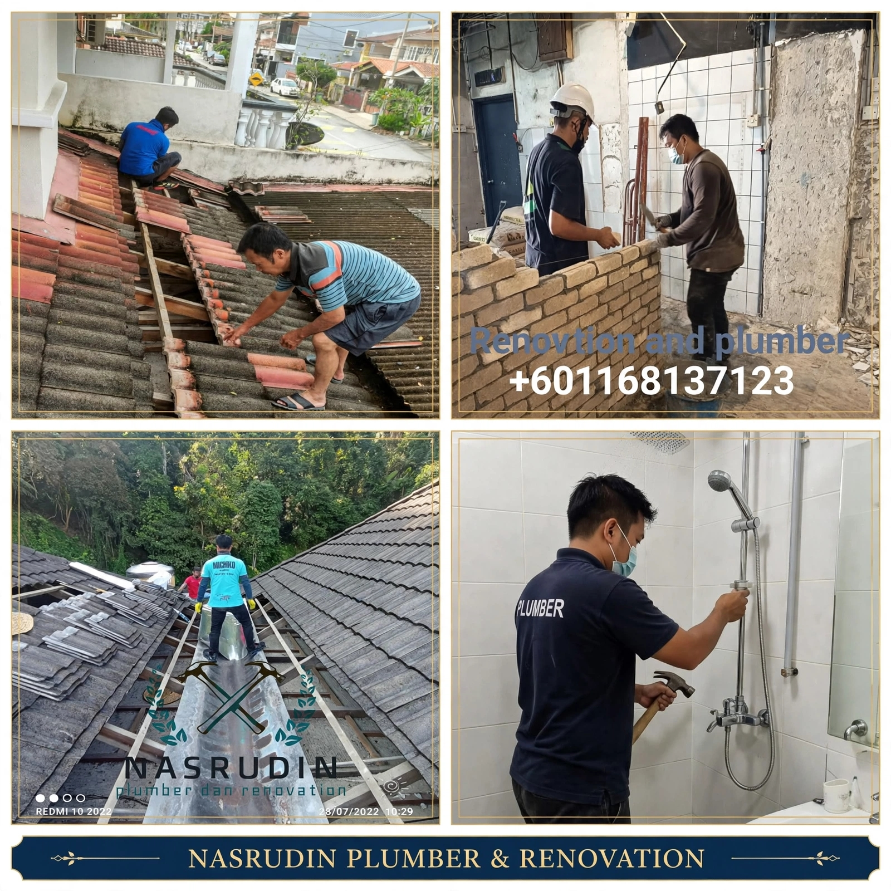

NR PLUMBER
& UBAH SUAI RUMAH
☁️ 25°C👥 526
🕒 02:54👁️ 137
☰
Apa yang anda perlukan? Taip sahaja di sini.
Dipercayai pelanggan
Termasuk Ampang
8 pagi - 9 malam
Hantar gambar, dapat cadangan
 Servis Kami
Servis Kami💧 Baiki Paip Bocor & Paip Pecah
Paip Bocor
Paip Pecah
🚽 Baiki Tandas & Sinki Tersumbat
Baiki Tandas
Sinki Tersumbat
Profesional • Kemas • Harga Jelas
Info berguna untuk ilmu plumbing anda.
Pilih tarikh yang sesuai dan hubungi kami melalui WhatsApp. Kalendar tunjukkan slot yang masih tersedia.
⚡ Respon pantas • ampang,selangor/Kuala lumpur

Kami komited bagi perkhidmatan paip yang kemas, harga berpatutan dan penerangan yang jelas dari awal hingga kerja selesai.
✅ Kerja kemas & teliti - setiap kerja diperiksa bersama anda.
✅ Harga ikut bajet - dibincang awal sebelum kerja bermula.
✅ Servis paip & renovation dalam satu pasukan.
✅ Kawasan ampang,selangor/kuala lumpur
✅ Mudah dihubungi melalui WhatsApp - hantar gambar, terus dapat cadangan.
✅ Penerangan dalam bahasa mudah, tanpa istilah teknikal yang membingungkan.
Nasrudin Plumber beroperasi di Ampang, Kuala Lumpur dan kawasan sekitar Selangor. Untuk kawasan yang lebih jauh, caj transport akan disebut dalam WhatsApp sebelum kami keluar.
Pilih tarikh, kami confirmkan slot dalam WhatsApp.
Respon pantas • Ampang, Selangor • Kuala Lumpur
RISWAN PLUMBER • PROFESSIONAL SERVICE
Mudah, Cepat & Teratur — Dari Booking Sampai Siap
Kenal pasti masalah anda — paip bocor, sumbatan, water heater atau renovasi.
Guna kalendar tempahan dan pilih tarikh berstatus Available.
Hantar tempahan supaya tarikh anda direkodkan dalam jadual kami.
Hantar alamat dan gambar masalah untuk anggaran kerja yang tepat.
Kami sahkan tarikh, masa dan caj transport sebelum keluar.
Kerja dibuat mengikut persetujuan dan diperiksa bersama sebelum selesai.
SOALAN LAZIM
Jawapan pantas sebelum anda booking.
Kami cover Shah Alam, Klang, Subang, Petaling Jaya, Puchong dan kawasan sekitar. WhatsApp kami untuk check kawasan anda.
Pilih servis, pilih tarikh dalam kalendar, hantar booking dan WhatsApp kami alamat + gambar masalah.
Boleh. Hantar gambar dan video masalah, kami bagi anggaran sebelum datang.
Ya, paip bocor atas siling, dalam dinding, bawah tanah dan bawah lantai.
Ya, pasang baru, tukar dan baiki water heater serta water pump.
Ya, waterproofing dari dasar lantai, bukan sekadar tampal epoxy.
Ya, bumbung bocor, flashing, genting pecah dan gutter.
Hantar gambar / video. Kami bantu diagnos dan buat pemeriksaan di lokasi jika perlu.
⚠ PENTING • KENALI TANDA AWAL
Kebocoran bawah tanah sukar dikesan kerana paip berada di dalam tanah atau di bawah lantai. Kebocoran kecil yang dibiarkan boleh naikkan bil air dan rosakkan lantai & dinding.
Baca Panduan Penuh →⚠ PANDUAN PEMERIKSAAN
Lihat bila kebocoran berlaku dan corak airnya. Nombor pada rajah menunjukkan tanda paip bocor (biru) vs lantai / waterproofing bocor (merah).
Baca Panduan Penuh →⚠ PANDUAN PEMERIKSAAN
Tiga tanda utama untuk bezakan samada dari bumbung, genting, flashing atau dari paip / tangki atas ceiling.
Baca Panduan Penuh →Sudah baiki siling & waterproofing sendiri tapi masih bocor? Kemungkinan punca dari rumah jiran. Panduan ni terangkan tanda, cara berbincang tanpa bergaduh dan bukti yang perlu ada.
Baca Panduan Penuh →⚠ PENERANGAN MASALAH
Bilik air bocor perlu baiki dari punca, bukan sekadar tampal. Lantai dipecah, waterproofing dibuat dari dasar, ujian kebocoran dijalankan sebelum jubin dipasang semula.
Baca Panduan Penuh →〰 SERVIS PALING KERAP DIPANGGIL
Punca biasa minyak beku dan sisa makanan yang mengeras di S-trap. Kalau tandas dan floor trap turut lambat surut, sumbatan dah di paip utama dan perlu snake machine.
Baca Panduan Sinki Tersumbat →🪠 PENERANGAN MASALAH
Air naik tinggi lepas flush, turun perlahan atau berbau? Punca di trap bowl, paip buangan atau pemasangan tak rapat. Kalau bowl pecah / goyang / bocor bawah, pasang semula dengan flange dan seal yang betul.
Baca Panduan Toilet Bowl →⚠ PENERANGAN MASALAH
Tile boleh berbunyi "pop" dan terangkat sendiri walaupun tiada benda berat jatuh. Punca biasanya hollow di bawah tile, simen tak penuh, lantai lembap kerana paip bocor, atau tiada gap pengembangan.
Baca Panduan Tile Meletup →⚠ PANDUAN TEKNIKAL
Rajah menunjukkan saiz paip, kedudukan injap, kemiringan dan laluan air bersih serta pembentung untuk rumah teres di Malaysia.
Baca Panduan Penuh →⚠ PERHATIAN PEMILIK RUMAH
Air perlahan bukan sekadar masalah tekanan. Saiz paip tak sesuai, terlalu banyak sambungan, kemiringan salah dan paip tanpa penyokong boleh menyebabkan aliran lemah serta kebocoran tersembunyi.
📖 PANDUAN & SERVIS
🚿 Paip • 💧 Kalis Air • 🚽 Tandas • 🛁 Bilik Air • 🏠 Renovasi
Plumber Berdekatan — Semua Kawasan Servis Kami → Plumber Ampang, KL — Lihat Servis & Harga → Tandas & Longkang Tersumbat Ampang — FAQ & Tempahan →⭐ ULASAN PELANGGAN
Ulasan penuh Riswan Plumber boleh dibaca terus di listing Google Maps kami.
Baca Semua Ulasan Di Google ⭐ Tulis Ulasan Google📍 Lot 1131 G, Jalan Datuk Abu Samah, Kampung Pasir, 68000 Ampang Jaya, Selangor, Malaysia
🕐 Waktu operasi: Isnin–Ahad • 8 pagi – 9 malam
📍 Kawasan servis: Ampang, Kuala Lumpur, Selangor dan sekitar Klang Valley
💬 WhatsApp KamiImej dan video kerja sebenar Riswan di Ampang, Kuala Lumpur dan Selangor.
Lihat Galeri →Sebelum dan selepas kerja Riswan — gambar projek yang disahkan.
Lihat Galeri →KAWASAN SERVIS
Ampang, KL & Selangor
WAKTU OPERASI
Isnin–Ahad • 8 pagi – 9 malam
Beri Maklum Balas Anda
☆ ☆ ☆ ☆ ☆
© 2026 Riswan Plumber. Hak cipta terpelihara.
Plumber Ampang • Plumber KL • Plumber Selangor • Plumber Berdekatan
Bilik Air Bocor • Sinki Tersumbat • Tukar Paip Air • Toilet Bowl Tersumbat